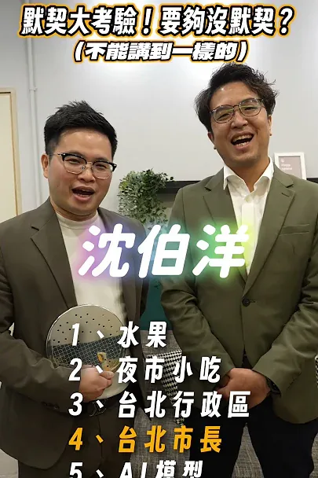
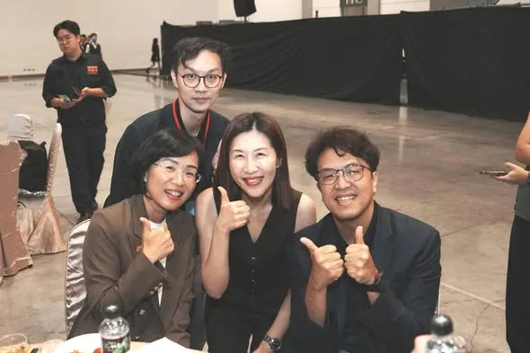
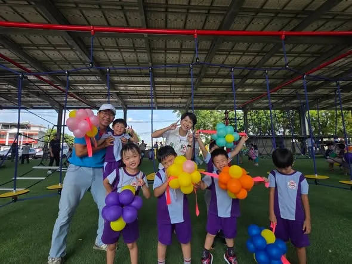
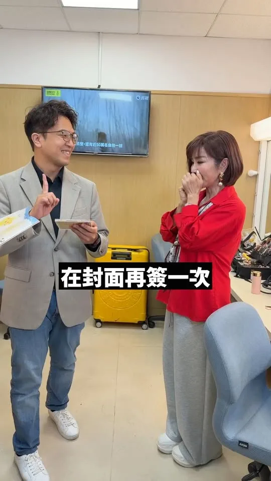
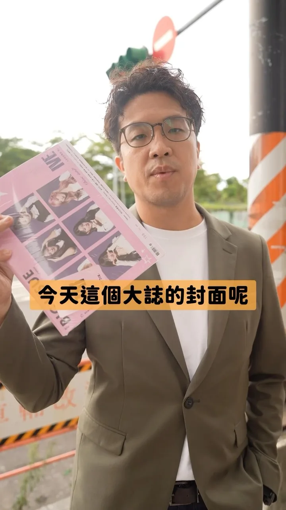
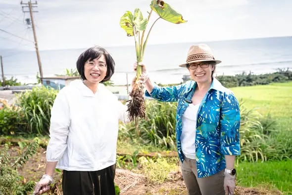
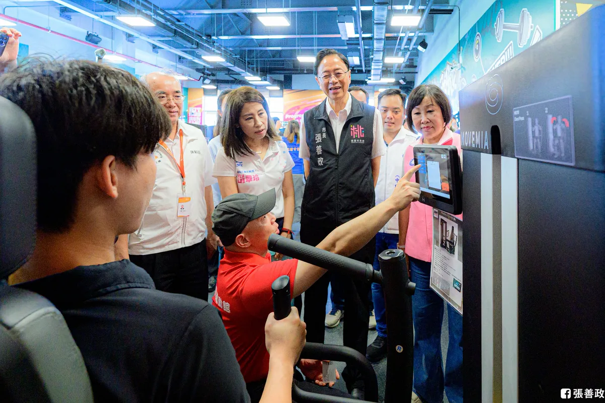
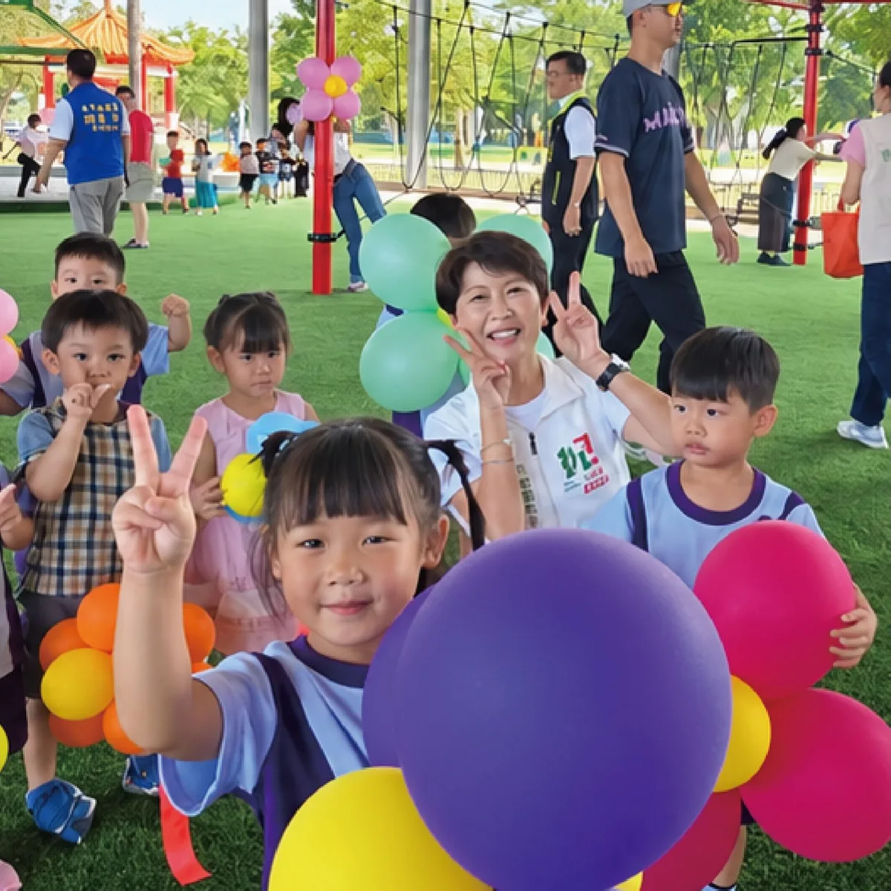
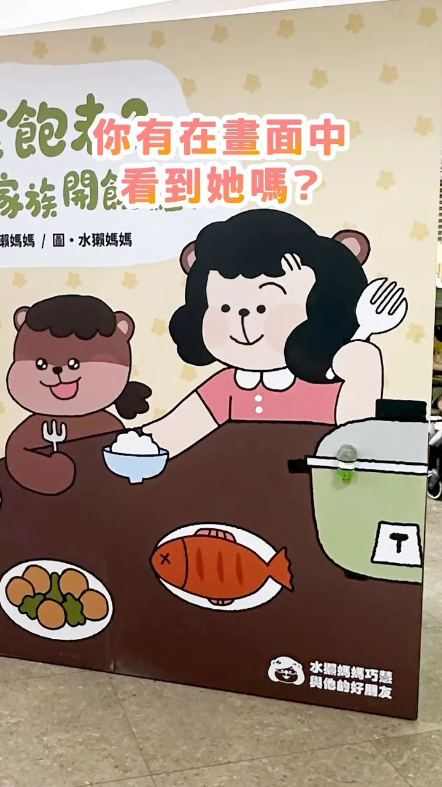
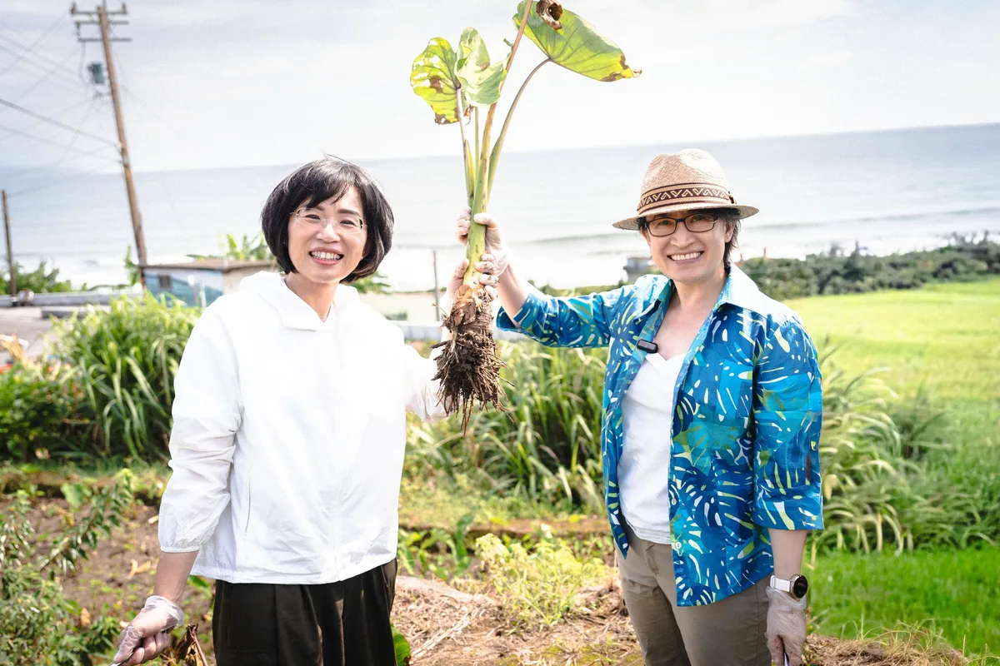

賴瑞隆zenolai

@zenolai:趁著行程空檔來碗肉燥飯，也外帶幾份給助理們。 一碗肉燥飯，有人喜歡滷汁多一點、有人喜歡清爽一點，每個人口味不同；一座城市也是一樣，有不同的想法、不同的選擇。 高雄之所以偉大，就在於城市有多元的聲音，也有包容不同選擇的胸襟。我也會繼續努力，爭取更多市民的認同。 每一位認真打拚、用心經營的在地店家都相當不簡單，我們一起支持高雄好味道，也祝福大家生意興隆！
Posts
@zenolai:趁著行程空檔來碗肉燥飯，也外帶幾份給助理們。 一碗肉燥飯，有人喜歡滷汁多一點、有人喜歡清爽一點，每個人口味不同；一座城市也是一樣，有不同的想法、不同的選擇。 高雄之所以偉大，就在於城市有多元的聲音，也有包容不同選擇的胸襟。我也會繼續努力，爭取更多市民的認同。 每一位認真打拚、用心經營的在地店家都相當不簡單，我們一起支持高雄好味道，也祝福大家生意興隆！

跑到現在，才開始吃今天的第一餐😅 趕快補充能量，迎接晚上的中秋晚會馬拉松！


Didn't see a part two coming, did you? Back for another chemistry test—can we match our answers t...

何欣純在英國求學的時候，想念台灣家鄉味，就會跟英國室友分享我的炒米粉，省錢有有人情味！ 美鳳姐超漂亮的！❤


9/9是律師節，參加台北律師公會舉辦的「律師節慶祝大會」，再次見到許多法律界的前輩與夥伴，感到格外親切。 ⠀ 當看到許多同學、學長姐、學弟妹還有學生，大家聚在一起，真的很溫暖。可惜時間不夠，沒辦法跟大家一一拍照敘舊，真不好意思。 ⠀ 律師的訓練，讓我們習慣從複雜問題中釐清脈絡、找出關鍵，並提出能夠落實的解方。這不只是法律工作的基礎，也是城市治理需要的能力。 ⠀ 祝所有律師朋友，律師節快樂！讓我們繼續在不同的位置，以專業守護人民的權利，也讓台灣變得更好。 ⠀ #台北順起來 #你的市長沈伯洋
我只不過唱個「離開地球表面」，怎麼下一秒就離開地面了？


【東山區全民運動體健場 正式啟用！🎈】 看到現場的小朋友們拿著繽紛的氣球花、在全新的設施上歡樂奔跑，臉上洋溢著天真無邪的笑容，心情也跟著亮了起來！😊✨ 感謝所有為這座體健場努力的夥伴與鄉親，為東山打造了一個兼具運動、休閒與親子同樂的好去處。目前一期工程完工，還有二期工程，亭妃會幫大家完成！未來亭妃也會讓37區都有屬於自己的運動空間，讓大朋友小朋友都有更優質、更安全的生活與運動環境！ #陳亭妃 #東山區全民運動體健場 #親子同樂 #東山 #台南


平常都是我簽名 今天換我追星 美鳳姐簽名Get！

150塊，在台北可以買到什麼？ ⠀ 可以買一本內容豐富的《大誌雜誌》， 支持弱勢及無家者靠自己的力量，重新站穩生活。 ⠀ 下次在捷運站出口，不妨停下腳步， 帶一本《大誌》回家。 ⠀ 一本雜誌，也能接住一個努力生活的人。


今天我和蕭美琴 Bi-khim Hsiao副總統在金山挖芋頭，也和在地青年、農會聊聊對金山未來的想像！ 我們都是芋頭派的喔🤩（芋頭派的舉手～🙋🏼
【Otter Mom's Little Chats】Calling My Cat | Pet Companionship | Anticipation and Discovery | Child...
一座停車場，也能看見 #臺中的味道！👍 今天出席 #中賓立體停車場 啟用典禮，感謝蔡長海董事長帶領中國醫團隊，與市府攜手提供401席汽車、375席機車停車位。捷安特家族更將對醫療團隊的感謝化為公益，捐贈22柱 #YouBike 租賃柱，讓大家停好車、騎單車，悠遊臺中！ 我常說，盧秀燕市長「大處著眼、小處著手」。配合崇德殯儀館改建，先做好停車配套，就是把市民需求放在心上。從安心出生、健康生活，到有尊嚴地走完人生最後一哩路，城市都要用心照顧。啟臣會延續這份用心，讓臺中成長、生活品質一起提升！ #臺中啟程 #打造旗艦城 #臺中升級 #臺中市北區 #公私協力 #中國醫藥大學附設醫院 #微笑單車 #智慧停車 #友善交通


迎接全民運在桃園，我們希望運動不只在賽場，也走進市民的日常生活 桃園是全台人口成長最快的城市之一，除了交通、建設要跟上，市民需要的運動空間，也要一步一步補足。 今天，龍岡全民運動館正式落成啟用，大園體育園區也同步開工。這兩項建設，一南一北，我們持續完善桃園各區的運動、休閒設施。 #龍岡全民運動館試營運 投入近4.8億元打造的龍岡全民運動館，規劃溫水游泳池、SPA、體適能中心與多功能教室，並導入AI智慧安全防護，補足龍岡地區長期缺乏大型室內運動及游泳空間的需求。 即日起至9月20日免費試營運，歡迎大家來體驗。 #大園體育園區開工 大園則是另一種情況。隨著航空城開發、客運園區移入，大園的人口持續成長，我們投入7.7億元打造大園體育園區。 除了25公尺溫水泳池、綜合球場及健身空間，也依照地形配置綠地步道與生態景觀，讓園區能一次滿足不同興趣愛好的朋友，工程預計118年完工。 一個是補足現在的生活需求；一個是替未來的成長預先準備。 這幾年，從爭取預算、克服用地限制，到把一項項工程做好，過程並不容易，但我們會繼續把每一分建設經費用在刀口上，讓各區都能有更充足的運動空間。 10月，#全民運 即將在桃園登場，除了辦好賽事，我們更希望透過運動建設，讓運動不只發生在賽場，也讓更多市民愛上運動，變得更健康、更快樂。
何欣純在英國求學的時候，想念台灣家鄉味，就會跟英國室友分享我的炒米粉，省錢有有人情味！美鳳姐超漂亮的！❤

今天是 #國民體育日 ，全齡動起來！ 高雄擁有得天獨厚的陽光與豐富的運動場域，無論是河畔慢跑、公園太極，還有各種球類運動的場地。要成為一座全齡宜居的運動城市，不只要年輕人有地方揮灑熱情，更要讓長輩能動得安心、動得健康！我以「全民普及、接軌國際、產業升級」提出四大政策： 一、 區區匹克球，高雄動起來 將近年風靡全球的「匹克球」打造為高雄市民的國民運動！活化高雄市內閒置羽、網球場，改建為多功能球場可以一起使用，並盤點夢時代商場、幸福公園與捷運站空置空間，打造可全天候揮拍基地；同時訂定「高雄匹克球日」，定期推廣免費試打，與學校、長照機構合作推動，落實跨世代全民樂活！也提供誘因鼓勵匹克球相關產業進駐高雄。 二、引進 HYROX，高雄接軌國際 爭取全球爆紅的「HYROX 體能賽」，並以全台首座官方認證的三民運動中心為據點，串聯在地健身與運動觀光產業，將高雄打造成亞太體能訓練重鎮。 三、發展賽事觀光，催生高雄運動產業鏈 以國際級賽事與大型體育活動為核心，串聯在地飯店、餐飲、交通與運動器材製造業，打造「賽事＋觀光」的經濟新引擎！透過高吸引力的體育盛事吸引國內外選手與觀眾，擴大賽事溢出效益，為高雄創造永續的運動產業價值。 四、爭取馬拉松認證 高雄國際馬拉松過去有「全台灣最友善的城市馬拉松」之稱，未來要持續朝國際化發展。我將積極爭取世界田徑總會World Athletics Road Race Label認證，打造具有高雄特色的國際標籤賽事（例如高雄富邦馬拉松），吸引世界頂尖選手與國際跑者來高雄。讓一場馬拉松不只是賽事，更成為城市品牌，帶動觀光、消費與地方經濟，讓世界透過運動看見高雄。 全民健康是高雄最強大的心跳，不只要讓高雄所有人能盡情揮灑汗水，更要讓高雄成為國際賽事的殿堂、與國際接軌。一步一腳印，讓「#台灣運動首都」真正落實在高雄！

東山區全民運動體健場 正式啟用！🎈 看到現場的小朋友們拿著繽紛的氣球花、在全新的設施上歡樂奔跑，臉上洋溢著天真無邪的笑容，心情也跟著亮了起來！😊✨ 感謝所有為這座體健場努力的夥伴與鄉親，為東山打造了一個兼具運動、休閒與親子同樂的好去處。目前一期工程完工，還有二期工程，亭妃會幫大家完成！未來亭妃也會讓37區都有屬於自己的運動空間，讓大朋友小朋友都有更優質、更安全的生活與運動環境！
開箱新北小遊戲！你不知道的好所在✨ 因為行程很多，我每天在新北到處跑，常會經過充滿驚喜的角落，我都會想：「我一定要讓更多人知道這裡！」 所以這次，我想用一個新的方式，邀請大家真的打開新北、重新認識新北。我邀請了8位知名的插畫家、漫畫家，和我一起打造了「開箱新北」藏寶計劃！ 【開箱新北第一彈：你家隔壁】 很多時候，熟悉的風景裡，反而藏著我們忽略的故事。 第一彈的藏寶企劃，我攜手人氣創作者 HOM 與小心臟LittleHeart，設置了5個藏寶點，要帶大家重新認識那些「以為很熟悉、其實不太了解」的日常角落。 大家快根據影片裡的線索找到我和 蔡英文 Tsai Ing-wen #小英總統 藏寶藏的地方，開箱寶盒！ 藏寶盒裡面有什麼？ 🎁水獺媽媽與HOM、小心臟限量「聯名壓克力鑰匙圈」（2款各3個，手腳慢就沒了！） 🎁水獺媽媽與HOM、小心臟獨家「聯名貼紙」（2款各10張） 🌟每位抵達的參加者可以領取「一份」小禮物唷～ 歡迎各位新北在地玩家，一起從你家隔壁開始，更深入地認識新北！
平常都是我簽名 今天換我追星 美鳳姐簽名Get！
何欣純露營風競選總部，小英帶你來開箱！⛺️ 今天很高興邀請到競總榮譽主委蔡英文 Tsai Ing-wen前總統，以及競選主委蔡其昌來到我的競選總部，一起開箱這個以露營桌椅、植栽、燈串、市民充電站與政策牆打造的「露營風」競總。 小英致詞時提到，台中正處於建設與產業的重要轉型時刻，需要中央地方合作，也需要一位願意把事情做到底的市長，他之所以願意接下榮譽主委一職，就是對我有信心。 謝謝小英對我的信任，未來我會和小英、蔡其昌主委，以及所有台中隊夥伴一起努力，讓台中迎向更好的下一個階段！ 這週六下午2點，競總將正式舉辦成立活動，還有FOCASA馬戲團《潘朵拉的盒子》精彩演出，賴清德總統也將到場支持，歡迎大家帶著家人朋友，一起來競總坐坐、看表演，一起為台中加油！ #心存大台中 #市長換欣_台中創新
#臺中升級 #幸福加給 山城聯合問政說明會 明天下午回到臺中山城，與古秀英議員服務團隊、吳振嘉 振興山城 有嘉在一同向鄉親報告我們山城發展的最新進度，還有啟臣對故鄉的施政願景。 歡迎所有山城的老朋友作伙來相挺，豐原山城是啟臣的起點、更是我最重要最堅實的靠山，各位的意見都是臺中升級至關重要的力量！ 📍活動資訊 時間｜9/9（三）15:30 地點｜東勢區客家樂活運動館（臺中市東勢區圓樓街1號-舊東勢高工） 共同出席｜市議員古秀英、吳振嘉 #臺中啟程 #打造旗艦城 #東勢 #臺中山城 #豐原山城 #幸福加乘 #幸福旗艦城 #臺中味 #TaichungWay

@schuanglawyer:跑到現在，才有空坐下吃今天的第一餐😅 趕快補充能量，準備迎接晚上的中秋晚會馬拉松！

龍介來囉！和你談天說地論台灣｜龍介的直播

欸？挺會找的欸～ #躲貓貓 #變色龍 #水獺媽媽樂園#mecchachameleon
【小女孩好想要有一隻貓來抱一抱，像個鬆鬆軟軟大毛球一樣的貓。他能如願嗎？】 適讀年齡：4歲以上 ✏️ 本集台語小教室紙箱、球、飼料、罐頭 《呼喚我的貓》文：蜜雪兒．羅賓森 圖：李瑾倫 小女孩好想要有一隻貓來抱一抱，像個鬆鬆軟軟大毛球一樣的貓。小女孩準備了橡皮球、貓薄荷、紙箱子…… 終於，奶奶家養的黑皮帶了許多朋友來。一整天都有這麼多貓咪陪伴，還有一隻窩在襪子的抽屜裡，真是太棒了！只不過，這些都是別人家的貓，心急的主人們還在街邊牆上貼了尋貓啟事，該怎麼辦呢？ 故事由上誼文化授權使用 👇 繪本這裡看：https://www.books.com.tw/products/0010810177? 👇 更多親子大小事，請在 FB 搜尋： 水獺媽媽巧慧與他的好朋友https://www.facebook.com/ottermamachiao 👇 寫信給水獺媽媽：100925 立法院郵局 第 27 號信箱 水獺媽媽收
@zenolai:我只不過唱個「離開地球表面」，怎麼下一秒就離開地面了？

「川ㄟ ～ 愛凍蒜喔！」，賀！我一定拚下去。 鄉親這一聲「川ㄟ」，我聽了心情高興的在飛。 一早來到新莊裕民市場走走，向攤商與市民朋友問聲好，每一聲加油，我都聽到了。 「我們支持你」，又是悄悄話，所以我不能告訴你是誰說的，但是我知道鄉親對我的鼓勵，有滿滿期待，有滿滿託付。 裕民市場裡，有機車來來往往，但總會那麼幾輛為我停下來，就為了給我一個機會，能握住他們的手。 說實在，如果大拇指可以集成冊，那這個光榮印章，我應該集滿了好幾本。這是我的精神糧食，讓我拚得踏實。 一條市場道路，真的長，但好朋友陪我一起走，時間一點都不漫長。因為累了，還有可愛的鄉親，倒一杯仙草茶讓我喘口氣。 今天議長蔣根煌、議員蔡健棠、議員候選人王珮宇，還有地方頭人，陪著我走，充滿力量一點都不累。 「我好開心看到你」，看到新莊好朋友我更是滿心歡喜。
Unboxing New Taipei Vol. 1: Right Next Door
【水獺媽媽巧巧話】讓我安靜五分鐘｜親子關係｜家庭生活｜兒童繪本

今天我和 #蕭美琴 副總統在金山挖芋頭，也和在地青年、農會聊聊對金山未來的想像！ 我們都是芋頭派的喔🤩（芋頭派的舉手～🙋🏼
新北衛星變繁星，打造 #新北光榮感！ 林姓宗親會的團結與榮譽感，也是我對新北的期待。我希望建立屬於新北人的 #城市認同感，讓每一位新北市民，以新北為榮。 新北有都市區，也有山海城鎮。未來我會成立 #都市更新局，給市民更安全、舒適的居住環境，也會透過 #新皇冠海岸 與 #鑽石山城 計畫，打造新北國際觀光新品牌。 新北29區，每一區都是一顆閃耀的星星。新時代、新市長，我會帶領新北大步向前，新北市民會以新北為榮！